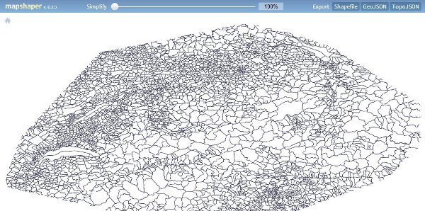
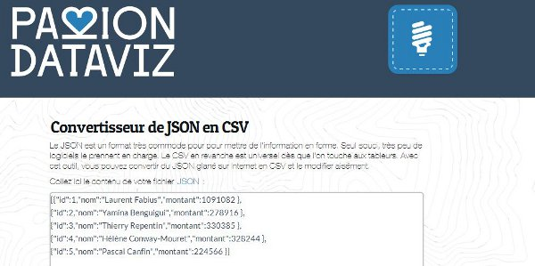
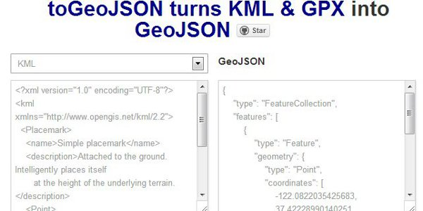
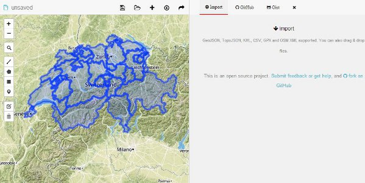
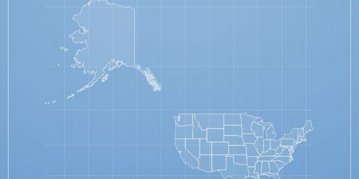
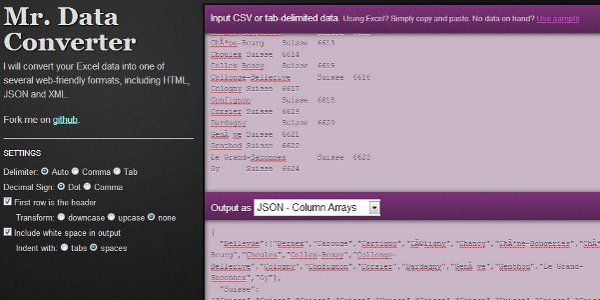
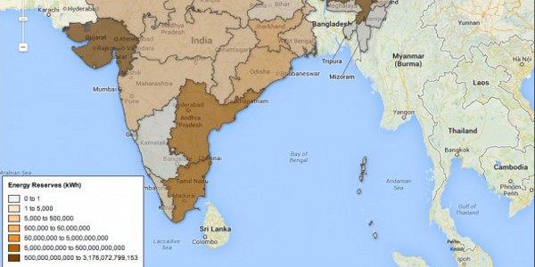

PLAY WITH DATA !
CONVERT BETWEEN DIFFERENT DATA FORMATS
This is a selection of useful websites for data-driven journalists, to convert your data to CSV, JSON, KML, GEOJSON or TOPOJSON.
-

-

-

TOGEOJSON
toGeoJSON is a simple way to use KML and GPX formats with modern web tools like Leaflet and MapBox.
-

GEOJSON.IO
Geojson.io is is a tool for drawing, changing and sharing GeoJSON-formatted map data
Website -

DISTILLERY
A simple website to convert between GeoJSON and TopoJSON. Simplification options.
by Shan Carter
-

MR DATA CONVERTER
Takes CSV or tab-delimited data from Excel and converts it into several web-friendly formats, including JSON and XML
by Shan Carter
-
